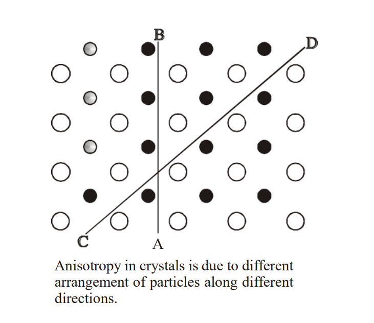
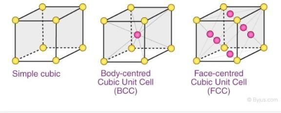
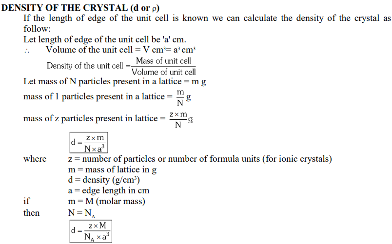

Solid State
When most liquids are cooled, they eventually freeze and form crystalline solids, solids in which the atoms, ions, or molecules are arranged in a definite repeating pattern. It is also possible for a liquid to freeze before its molecules become arranged in an orderly pattern. The resulting materials are called amorphous solids or noncrystalline solids (or, sometimes, glasses). The particles of such solids lack an ordered internal structure and are randomly arranged

Metals and ionic compounds typically form ordered, crystalline solids. Substances that consist of large molecules, or a mixture of molecules whose movements are more restricted, often form amorphous solids. For examples, candle waxes are amorphous solids composed of large hydrocarbon molecules. Some substances, such as silicon dioxide (shown in Figure 2), can form either crystalline or amorphous solids, depending on the conditions under which it is produced. Also, amorphous solids may undergo a transition to the crystalline state under appropriate conditions.
Crystalline solids are generally classified according the nature of the forces that hold its particles together. These forces are primarily responsible for the physical properties exhibited by the bulk solids. The following sections provide descriptions of the major types of crystalline solids: ionic, metallic, covalent network, and molecular.
General Characteristics of Solid State
(i) They have definite mass, volume and shape.
(ii) Intermolecular distances are
short.
(iii) Intermolecular forces are strong.
(iv) Their constituent particles (atoms, molecules or ions) have fixed
positions and can only oscillate about their mean positions.
(v) They are incompressible and rigid.
Anisotropy :
It is the property due to which crystals show different electrical and optical properties in different planes at the same
crystal.
Co-ordination Number :
The number of nearest neighbouring particles around a specific particle in a given crystalline substance is called as co-ordination
number of that crystalline substance.

Ionic solids, such as sodium chloride and nickel oxide, are composed of positive and negative ions that are held together by electrostatic attractions, which can be quite strong (Figure 3). Many ionic crystals also have high melting points. This is due to the very strong attractions between the ions—in ionic compounds, the attractions between full charges are (much) larger than those between the partial charges in polar molecular compounds. This will be looked at in more detail in a later discussion of lattice energies. Although they are hard, they also tend to be brittle, and they shatter rather than bend. Ionic solids do not conduct electricity; however, they do conduct when molten or dissolved because their ions are free to move. Many simple compounds formed by the reaction of a metallic element with a nonmetallic element are ionic.
Packing Efficiency or Packing fraction (P.E.):
"Packing efficiency is defined as the ratio of volume occupied by the atoms to the total volume of the crystalline substance"
CLASSIFICATION OF UNIT CELL:
1)Primitive Unit Cell
2)Centered Unit Cell:
It has three types - Face centered(FC), Body centered(BC), End
centered(EC)

